Le jeu et son but
Colony est un jeu de stratégie économique entre deux colonies de fourmis : la vôtre et celle d'un adversaire contrôlé par l'ordinateur. La fourmilière ennemie est placée en miroir par rapport au centre du terrain. Votre but : récolter habilement les ressources, développer la colonie et briser votre rival.
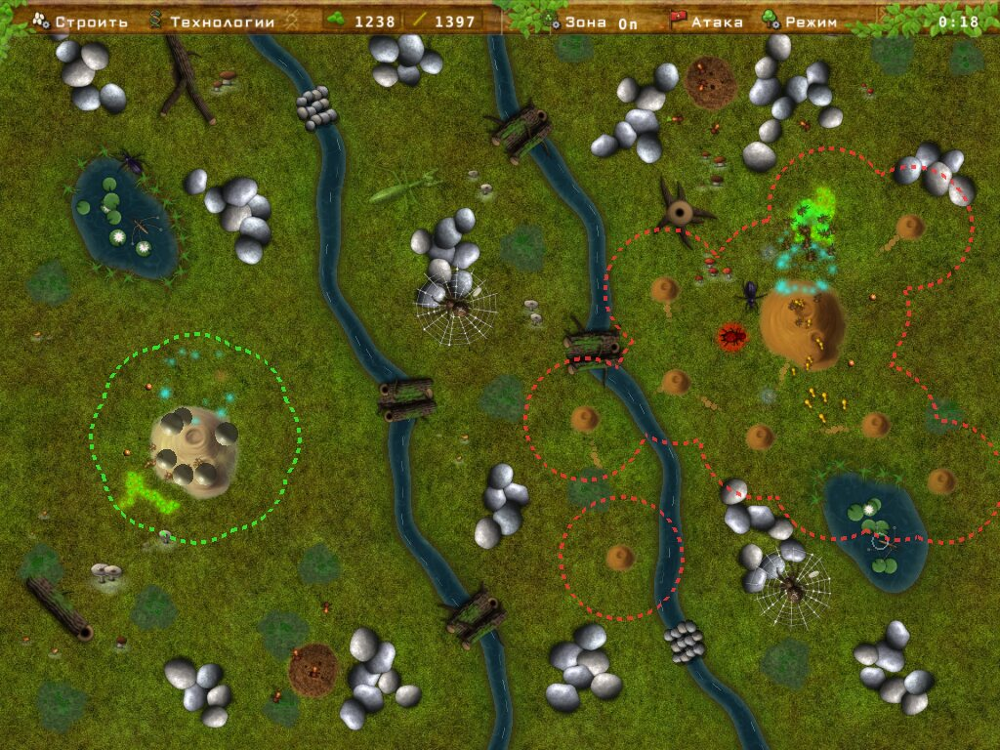
Victoire et défaite
- Victoire — l'ennemi n'a plus aucune ouvrière (œufs de la couveuse compris) et moins de 5 de nourriture, il ne peut donc pas en faire éclore une nouvelle.
- Défaite — la même chose est arrivée à votre colonie.
- Les bâtiments ne peuvent pas être détruits : les colonies ne tuent que les fourmis de l'autre.
Début de partie
Le menu principal propose deux façons de commencer :
- Nouvelle partie — le départ habituel : 25 de nourriture et 10 de bois.
- Mode abondance — les deux camps reçoivent d'emblée 1500 de nourriture et 500 de bois : construction, recherche et combat commencent tout de suite.
En mode abondance, tant qu'il vous reste de la nourriture (au moins 10), c'est une course aux armements : achetez plus de guerrières que l'ennemi, et il fait aussitôt éclore des guerrières de même force totale (Guerrières fortes comprises) sans rien dépenser en améliorations entre-temps. À force égale, il ne dépense en améliorations et entrepôts que ce qu'il a au-delà de vos réserves. On ne décroche donc pas la victoire la plus rapide par une ruée précoce.
Pendant une partie, le menu affiche aussi Continuer et Rejouer (la même carte depuis le début). On y trouve aussi les Statistiques — vos compteurs sur toutes les parties — et les Classements Steam des victoires les plus rapides.
Ensuite s'ouvre l'écran des réglages de la partie ; le jeu démarre avec Commencer. Vos choix sont mémorisés.
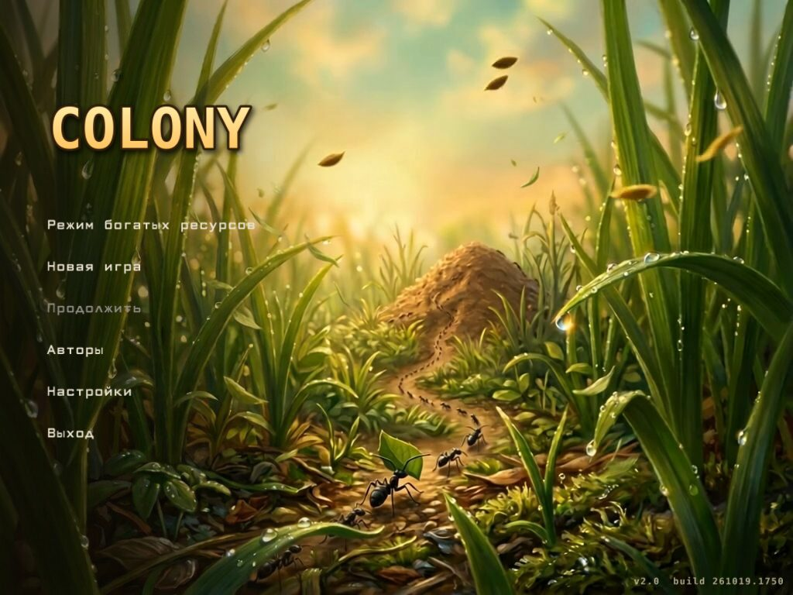
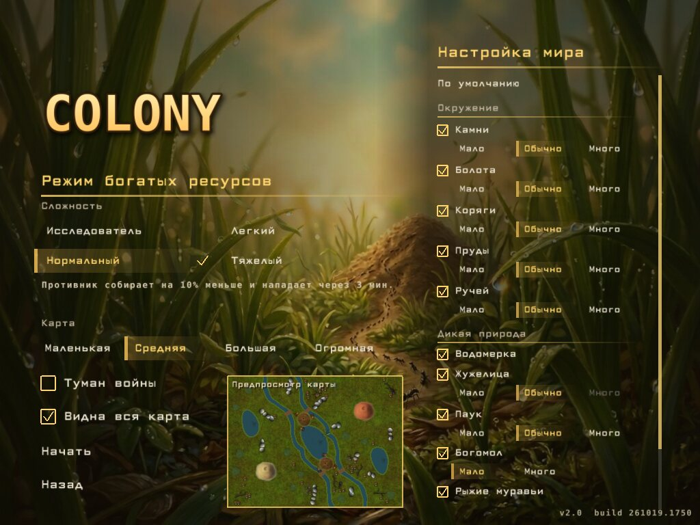
Difficulté
La difficulté ne change que l'adversaire informatique :
| Niveau | Ce qui change |
|---|---|
| Explorateur | L'ennemi ne crée pas de guerrières, ne pose pas de pièges et n'attaque jamais — explorez le terrain et l'économie en paix. Pas de succès dans ce mode. |
| Facile | L'ennemi récolte 30 % de moins, sans pièges, et n'attaque pas avant 6 minutes. |
| Normal | L'ennemi récolte 10 % de moins et n'attaque pas avant 3 minutes. |
| Difficile | L'ennemi joue à pleine puissance dès le début. |
Carte et visibilité
- Carte : Petite (800×600), Moyenne (1152×864), Grande (1440×1080), Immense (1728×1296). Une carte plus grande a d'autant plus de pierres, de marais et d'herbe.
- Brouillard de guerre — seul est visible ce qui est proche de votre fourmilière, de vos entrepôts et de vos fourmis. Le terrain exploré reste à demi visible ; une fourmilière ennemie découverte et ses entrepôts restent sur la carte. Les explosions et effets dans le brouillard ne se voient pas. Chaque niveau de Saut génétique augmente la portée de vue.
- Carte entière visible — la molette permet de dézoomer jusqu'au terrain entier. Sans cette option, pas au-delà de 800×600 — le terrain défile.
Réglages du monde
Chaque élément de l'environnement et de la faune peut être activé ou désactivé, avec sa quantité (Peu / Normal / Beaucoup) : pierres, marais, souches, étangs, ruisseau, grottes, champignons, gerris, escargots (seulement avec étangs ou ruisseau), carabes, araignées, mante, fourmis rousses. « Par défaut » rétablit le monde habituel. En bas à droite — un aperçu de la carte en direct.
Choisir l'emplacement de la fourmilière
Après Commencer, la caméra survole le terrain, puis vous choisissez d'un clic l'emplacement de votre colonie. Des hexagones marquent les emplacements autorisés ; la fourmilière ne peut pas être trop près du centre ni des bords. L'ennemi apparaît en miroir.
La première chose à faire est de faire éclore au moins une ouvrière (indice en bas de l'écran).
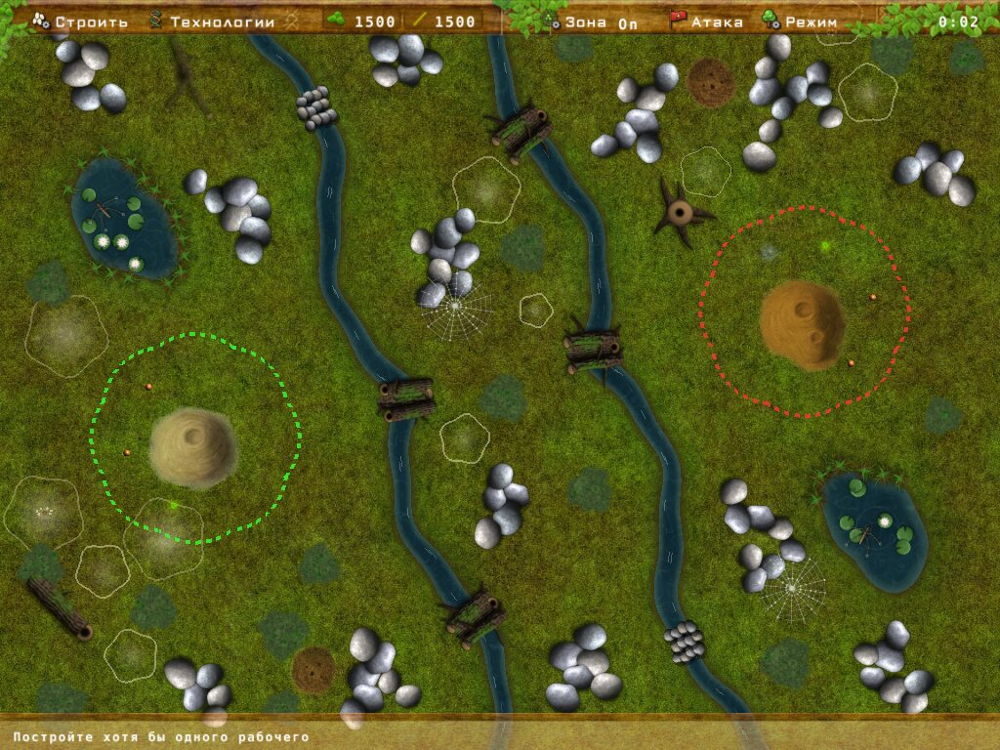
Interface
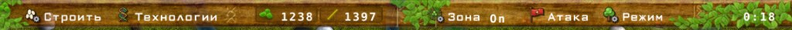
- Construire — éclosion des fourmis et bâtiments.
- Technologie — améliorations, automatisation et pièges (après la construction du laboratoire).
- Nourriture et Bois — vos réserves.
- Zone — dessiner les zones de récolte : On — ajouter, Off ; touches = / -.
- Attaque — panneau des ordres et de l'attaque. Mode — sylviculture, champignonnière et conduite des unités.
- À droite — le temps de jeu. En bas — la ligne d'indices et le panneau des fourmis sélectionnées.
Caméra
- Molette — zoom vers le curseur (jusqu'à 2,5×).
- Bouton droit maintenu — faire glisser le terrain (« attraper et tirer ») ; un bref clic droit annule toujours la sélection.
- Flèches — faire défiler le terrain ; bouton droit (ou du milieu) maintenu — faire glisser le terrain.
- Home — revenir à votre fourmilière.
Infobulles au survol
Survolez une fourmi, une plante, un champignon, un piège, un animal ou une fourmilière — une fiche apparaît : santé, âge, croissance, maturation, pourriture, chargement du piège, réserves d'un nid de fourmis rousses, etc.
Ressources
Nourriture
Pousse à partir de graines : un groupe de plantes mûr donne de nouvelles graines. Récoltée par les ouvrières. La nourriture longtemps non récoltée se lignifie et devient du bois.
Bois
Récolté par les bâtisseuses. Naît de la nourriture longtemps non récoltée et pousse en roseaux au bord des étangs. Nécessaire pour le laboratoire, les entrepôts, les guerrières et une partie de la recherche.
Champignons
Une autre source de nourriture après la recherche Nouveau type de ressource. Voir la section Champignons.
Récolte et livraison
- Les fourmis ne récoltent que dans les zones de récolte (ou sur ordre direct) et portent leur charge à l'entrepôt ou à la fourmilière la plus proche.
- Chargée, une fourmi marche 30 % plus lentement.
- Les fourmis libres qui n'ont rien à récolter clignotent en taches sur la fourmilière.
Pistes de fourmis
Là où les fourmis de la colonie passent souvent, l'herbe est foulée en une piste de sable granuleuse. Sur leur propre piste, les fourmis vont plus vite — jusqu'à +15 %. Une piste abandonnée se recouvre d'herbe en quelques minutes. Les pistes ennemies ne se voient que là où vous voyez le terrain.
Unités
Les fourmis éclosent depuis le panneau Construire : un œuf apparaît d'abord dans la couveuse autour de la fourmilière (jusqu'à 16 à la fois), puis la fourmi en sort. Maj + touche commande 16 fourmis d'un coup.
| Unité | Prix | Rôle |
|---|---|---|
| Ouvrière E | 5 | Récolte nourriture et champignons. 1 point de santé. |
| Bâtisseuse A | 3 2 | Récolte bois et roseaux. 1 point de santé. En Nouvelle partie, ni vous ni l'ennemi ne pouvez faire éclore de bâtisseuses pendant les 30 premières secondes après le début (la première ouvrière), pour que la partie commence équitablement ; en mode abondance, tout de suite. |
| Guerrière W | 35 10* | Attaque et défense. Santé 10 (15/20/25 avec Guerrières fortes). Nécessite le laboratoire. |
* Chaque niveau de Guerrières fortes rend une guerrière plus chère : 35/15, 45/25, 50/30. L'amélioration ne s'applique qu'aux nouvelles guerrières.
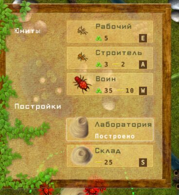
Limite et âge
- Au plus 40 ouvrières et 40 bâtisseuses ; chaque entrepôt relève chaque limite de 10. Les guerrières sont illimitées.
- Les fourmis vieillissent et meurent de vieillesse — la barre d'âge de l'infobulle passe du vert au rouge. Dans un marais, elles vieillissent 10 fois plus vite.
- En attaque, les fourmis vont 30 % plus vite que d'habitude.
Ouvrières et bâtisseuses mordent aussi
Sur ordre, ouvrières et bâtisseuses peuvent être envoyées contre les fourmis ennemies et les animaux. Elles mordent faiblement (quatre fois moins qu'une guerrière contre les animaux), et leur morsure ne s'améliore pas — un dernier recours quand il n'y a pas de guerrières.
Bâtiments et pièges
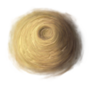
FourmilièreLe bâtiment principal : placé avant le début de la partie. Les ressources y sont apportées et les fourmis y éclosent.
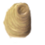
Laboratoire LUne annexe de la fourmilière, sans emplacement à choisir. Débloque les guerrières, la recherche et les pièges.
Prix : 35
Entrepôt S
Un point de dépôt proche pour les ressources et +10 à la limite d'ouvrières et de bâtisseuses. Jusqu'à 5 entrepôts, Plus d'entrepôts en ajoute.
Prix : 25
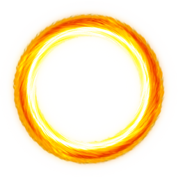
Piège BUne mine : explose quand une fourmi étrangère ou un animal marche dessus.
Prix : 1 1
Où placer un entrepôt
- Seulement à portée de la fourmilière ou d'un autre de vos entrepôts — le réseau d'entrepôts s'étend pas à pas (la portée est montrée par des cercles pointillés).
- Pas trop près des ressources en croissance.
- Pas sur les souches, champignons, étangs et roseaux, le ruisseau, les nids de fourmis rousses, les pièges, la nourriture, le bois ni les toiles d'araignée. Au bord d'un étang, c'est possible.
- L'ennemi suit les mêmes règles.
Si un entrepôt, un piège ou une zone ne peut pas être placé quelque part, une infobulle près du curseur en donne la raison : « Trop près d'une fourmilière », « Seulement dans vos zones », « Rien à récolter ici », etc.
Pièges
- Se posent seulement à l'intérieur de vos zones de récolte, sur votre moitié du terrain — pendant que vous choisissez l'emplacement, les zones sont visibles.
- Après la pose, le piège se charge (environ 17 secondes, la progression est dans l'infobulle), puis il s'arme.
- Se déclenche sur les fourmis ennemies, la faune et les fourmis rousses. L'explosion tue les fourmis alentour, une araignée, un carabe, un gerris ; à une mante, elle retire 60 de santé.
- Les pièges ennemis sont tout aussi dangereux. L'ennemi pose des pièges à partir de la difficulté Normal.
- L'automatisation Pièges les pose d'elle-même.
Recherche
Le panneau Technologie T s'ouvre après la construction du laboratoire. À gauche les améliorations (trois niveaux), à droite l'automatisation.
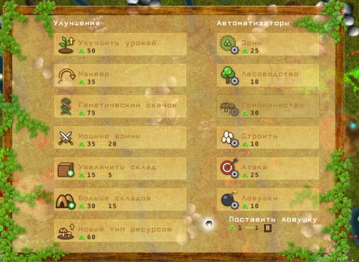
| Amélioration | Niv. I | Niv. II | Niv. III | Effet |
|---|---|---|---|---|
| Récolte accrue | 50 | 80 | 120 | Les plantes poussent plus vite et sont plus nombreuses. |
| Manoeuvre | 35 | 20 | 70 | Débloque le type d'attaque Manoeuvre — les guerrières contournent l'ennemi en arc et frappent de flanc ; plus rapide à chaque niveau. |
| Saut génétique | 75 | 85 | 95 | Vitesse des fourmis ×1,2 / ×1,4 / ×1,6 et portée de vue dans le brouillard. |
| Guerrières fortes | 35 20 | 45 30 | 50 7 | Les nouvelles guerrières ont 15 / 20 / 25 de santé au lieu de 10. |
| Agrandir entrepôt | 15 5 | 45 8 | 60 11 | Élevage de nourriture et de bois : +5 % / +10 % / +18 % de revenu des entrepôts. |
| Plus d'entrepôts | 30 15 | 50 25 | 75 40 | +1 entrepôt au-delà de cinq par niveau. |
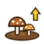 Nouveau type de ressource | 60 | 125 | 180 | I — les ouvrières récoltent les champignons, on peut poser des zones sur les champignons ; II — les champignons de notre moitié poussent 20 % plus vite ; III — il en pousse 20 % de plus. |
— nourriture, — bois. L'ennemi recherche les mêmes technologies.
Automatisation
S'achète une fois dans la colonne de droite du panneau Technologie. La plupart s'activent ou se désactivent ensuite avec le bouton Auto / Manuel.
Zones
Les zones de récolte se posent automatiquement autour des ressources.
25 nourriture
Sylviculture
Une partie des fourrés n'est automatiquement pas récoltée — elle devient du bois.
10 bois
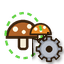
ChampignonnièreDans les mycéliums de votre moitié, ~40 % des champignons sont laissés — les mycéliums poussent plus vite. Nécessite Nouveau type de ressource I.
30 nourriture
Construction
Éclosion automatique : la colonie fait éclore elle-même les fourmis nécessaires.
10 nourriture
Attaque
Attaque planifiée : la colonie rassemble elle-même des guerrières et attaque quand elle est assez forte.
25 nourriture
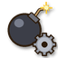
PiègesPièges automatiques : les pièges se posent d'eux-mêmes tant qu'il y a des ressources.
10 nourriture
Mode et zones de récolte
Zones de récolte
Appuyez sur Zone (ou =) et dessinez des zones sur le terrain — les fourmis y récoltent. - — retirer des zones. Si les ressources sont loin d'un entrepôt, mieux vaut ne pas y poser de zone avant qu'un entrepôt soit construit à proximité.
Le panneau Mode
- Sylviculture F — marquez les plantes que les ouvrières ne toucheront pas : elles deviendront du bois. « + » au curseur — marquer, « − » — retirer la marque.
- Champignonnière G — de même, on marque les champignons à ne pas récolter.
- Conduite des unités :
- Attaquer tous — les guerrières libres protègent les ouvrières : elles se jettent sur tout animal ou ennemi qui les a attaquées.
- Récolte — toutes les forces à la récolte des ressources.
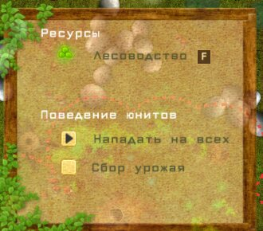
Ordres et sélection
Sélection
- Cadre : maintenez le bouton gauche sur le terrain et tracez un cadre vert — les fourmis à l'intérieur sont sélectionnées (les guerrières s'il y en a, sinon les bâtisseuses, sinon les ouvrières).
- Tab — sélectionner toutes vos guerrières.
- Les sélectionnées s'affichent en bas à gauche : une vignette par fourmi avec sa barre de santé, leur nombre et leur force totale.
- Bouton droit — annuler la sélection et fermer les panneaux ouverts.
- Les fourmis sélectionnées n'obéissent qu'à vous : la défense de la colonie, Attaquer tous et l'attaque automatique ne les prennent pas.
Où cliquer
Sur le terrain
Les fourmis vont au point (une ligne pointillée animée) et y attendent.
Poste
Un second clic près du même point, quand les guerrières y sont déjà, crée un poste : les guerrières tiennent la place, frappent les ennemis qui approchent et reviennent. Un drapeau se dresse au-dessus du point et l'anneau pointillé « respire ». Seul un nouvel ordre à ces guerrières lève le poste. Avant le second clic, un drapeau indicatif tombe sans cesse sur le point.
Sur la nourriture / un champignon
Les ouvrières récoltent la nourriture voisine, même hors des zones, et la ramènent. Un champignon, elles le rongent (si les champignons sont recherchés).
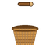
Sur le boisLes bâtisseuses récoltent le bois voisin.
Sur un ennemi / un animal
Les sélectionnées attaquent la cible (cercle pointillé rouge). Une fois morte, elles passent aux petits du nid, sinon elles attendent.
Le viseur vert au curseur montre où l'on peut envoyer les fourmis. Les fourmis exécutent un ordre même après l'annulation de la sélection, puis reprennent leur travail habituel. Les attaques ordonnées par clic sur un ennemi figurent aussi dans les graphiques.
Attaque
Le panneau Attaque :
- En haut — le type de vos fourmis (un clic le change), en dessous — le type de fourmis ennemies à attaquer.
- « ‹ 1 › » — combien de fourmis envoyer (maintenir — rapide). Les choisies sont marquées d'un anneau.
- Assaut — envoyer le détachement.
- Type d'attaque : Direct — de front ; Manoeuvre — en arc de contournement (nécessite la recherche Manoeuvre).
- Attaque continue — les guerrières sont envoyées sans arrêt contre l'ennemi ; le panneau reste ouvert et montre combien sont « en attaque ».
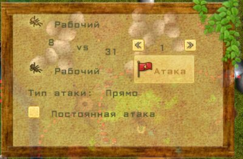
Combat
- La santé de tous se mesure dans les mêmes unités : ouvrière et bâtisseuse — 1, guerrière — 10…25.
- La santé d'une guerrière se lit aux pétales qui l'entourent : rouge-orangé pour vos guerrières, bleus pour celles de l'ennemi.
- Quand le panneau Attaque est fermé, les fourmis en attente retournent au travail.
- Quand la colonie est attaquée, une alarme retentit et la musique passe en mode combat.
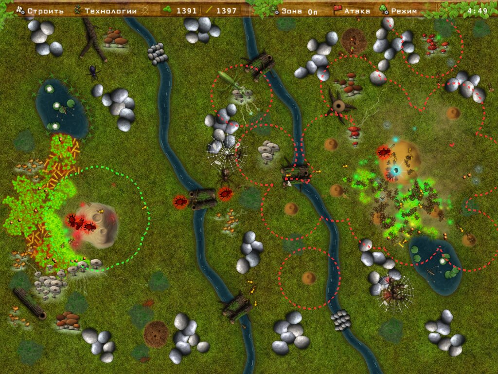
Environnement
| Objet | Praticable | Particularités |
|---|---|---|
| Pierres | Non | On les contourne ; les araignées tissent leurs toiles contre les pierres. |
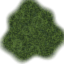 Marais | Oui, 4 fois plus lent | Les fourmis vieillissent 10 fois plus vite. À proximité, les champignons poussent plus vite et plus dru. |
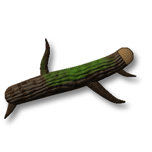 Souches | Oui | Sous certaines — des terriers de carabes ; des champignons poussent près des souches. Pas d'entrepôt sur une souche. |
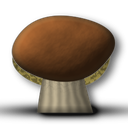 Champignons | Oui, deux fois plus lent | Pas d'entrepôt sur un champignon. |
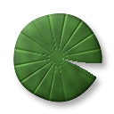 Étangs | Non (eau) | Rive fertile : les plantes poussent plus vite et donnent plus de graines. Les roseaux du bord sont du bois prêt et repoussent vite. Chaque étang abrite un gerris ; des escargots sortent de l'eau. |
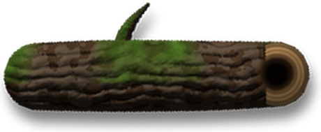 Ruisseau | Seulement par les passages | Traverse le terrain. Les passages sont en pierres ou en rondins, larges de 3 rangées ; fourmis et animaux les empruntent. |
 Toile d'araignée | Oui, près de 3 fois plus lent | La propriétaire de la toile se jette sur quiconque approche. |
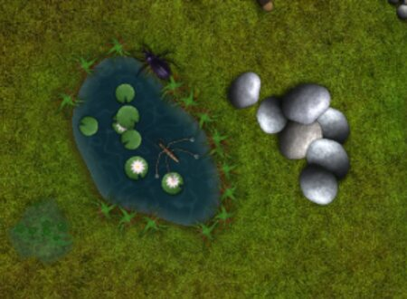
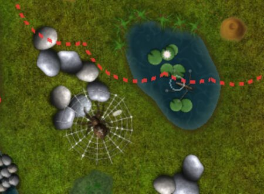
Il y a d'un à quatre étangs, et chaque camp en reçoit autant : un au centre, les paires en miroir. Si la carte a un ruisseau, des bras latéraux en partent vers les étangs voisins — d'étroits chenaux qui se jettent dans l'étang (en miroir sur les deux moitiés). Un chenal, comme le ruisseau, ne se franchit pas : on contourne l'étang.
Grottes
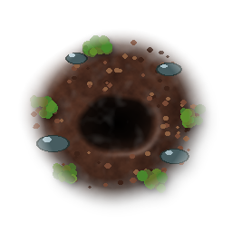
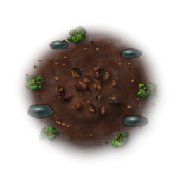
Le terrain peut avoir des grottes (réglages du monde : Peu / Normal / Beaucoup — 2, 4 ou 6, par paires : une sur chaque moitié). Chacune a son aspect : pierre, terre noire, argile, sous les racines, grès, calcaire, tourbe ; une lumière brille à l'intérieur — différente dans chaque grotte.
- Sélectionnez 10 ouvrières ou bâtisseuses et cliquez sur la grotte : exactement les 10 plus proches y vont. À moins de 10, l'exploration ne commence pas. Les guerrières n'entrent pas dans les grottes.
- À l'intérieur, les fourmis restent à la colonie (la limite et la victoire les comptent) mais ne récoltent rien. L'exploration dure environ 90 secondes ; un anneau de progression s'affiche au-dessus de la grotte.
- Le résultat : chance — 500 de nourriture, ou 200 de bois, ou 300 de nourriture et 75 de bois ; rien — les fourmis ressortent simplement ; malheur — les fourmis disparaissent. Dans tous les cas l'entrée s'effondre : la grotte est explorée et ne brille plus ; quelques minutes plus tard elle disparaît tout à fait.
- Si une seule des dix meurt en chemin, les autres reviennent et la grotte reste inexplorée.
- L'ennemi explore aussi les grottes de sa moitié quand il peut se passer de fourmis : avec beaucoup de nourriture il envoie des ouvrières, sinon des bâtisseuses.
- Tant que l'expédition est à l'intérieur, de la fumée s'élève de la grotte.
- Toutes les grottes d'une carte sont différentes : leur sorte, leur lumière et sa couleur ne se répètent pas. Autour de chacune, une poussière de la couleur de sa terre.
- Les résultats figurent à la ligne « Grottes » du bilan de partie et dans menu principal → Statistiques (on y voit aussi lesquelles des 7 sortes vous avez explorées). Les grottes ont trois succès : « Trésor », « Toutes les profondeurs » et « N'en oublier aucune ».
Arbres
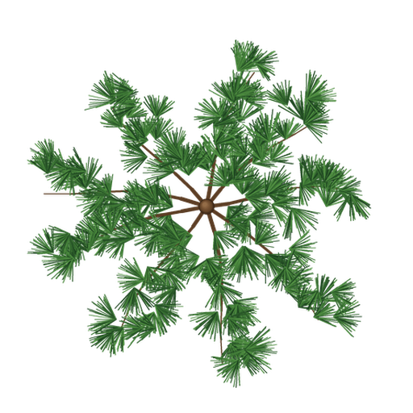
Des arbres poussent sur le terrain — chênes et pins (dans les réglages du monde : Peu — un arbre au milieu, partagé par les deux camps ; Normal — un sur chaque moitié ; Beaucoup — trois sur chaque moitié). Ils sont petits au début de la partie et grandissent peu à peu.
- Les architectes rongent d'eux-mêmes les branches des arbres de leur moitié (jusqu'à 3 par arbre). Une branche rongée tombe et laisse un tas de bois : les architectes le rapportent comme d'habitude, sans zone de récolte. Plus l'arbre est grand, plus une branche donne de bois.
- Une branche rongée repousse au bout de quelques minutes — petite d'abord.
- De temps en temps l'arbre se balance au vent : des branches que personne ne ronge tombent des glands (chêne, nourriture) ou des pommes de pin (pin, bois). Un architecte porte un gland ou une pomme de pin ; s'il est tué, la charge reste au sol et un autre la ramasse.
- À vous de choisir : marquez un arbre avec l'outil « Forêts » et les architectes cessent de le ronger — il ne donne plus que ses fruits. L'ennemi décide seul : tant qu'il a assez de bois, il épargne ses arbres pour leurs fruits. La sylviculture automatique ne touche pas aux arbres et ne change jamais votre choix.
- Guêpes. Avec le temps, un arbre adulte reçoit un nid de guêpes
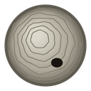
. Les guêpes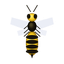
tournent au-dessus de l'arbre et piquent toute fourmi dessous : un ouvrier ou un architecte meurt aussitôt, un guerrier est blessé. Haut dans les airs, une guêpe est hors d'atteinte — les guerriers ne mordent que celle qui plonge pour piquer. Tant que des guêpes vivent, les architectes évitent l'arbre. Tuez les guêpes avec des guerriers, et les architectes rongeront la branche du nid (même sur un arbre marqué avec « Forêts ») : le nid tombe et éclate, ses larves (5 de nourriture chacune) sont rapportées par les ouvriers et les architectes. Quelques minutes plus tard, un nouveau nid peut apparaître. Les guêpes se désactivent dans les réglages du monde (case « Guêpes » sous « Arbres »). - Tant que des fourmis sont sous une couronne, elle devient transparente.
Champignons
Les mycéliums poussent près des souches et surtout près des marais. On peut récolter les champignons après la recherche Nouveau type de ressource.
Coulemelle
Le plus grand : jusqu'à 13 de nourriture.
Cèpe
Grand : jusqu'à 11 de nourriture.
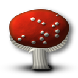
Amanite tue-mouchesMoyen : jusqu'à 6 de nourriture.
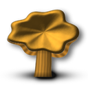
GirollePetit : jusqu'à 4 de nourriture.
- Plus le champignon est grand, plus il donne de nourriture, mais plus il faut de temps pour le ronger. Les ouvrières ne prennent que les champignons mûrs ; les jeunes continuent de pousser et nourrissent le mycélium.
- Un cercle de progression apparaît au-dessus du champignon ; on rapporte un morceau rongé. Un champignon non récolté finit par pourrir et disparaître.
- Un mycélium étend des filaments ; là où se rencontrent les filaments de deux mycéliums, un nouveau naît. Un filament qui atteint un marais y boit — ce mycélium donne des champignons 1,7 fois plus souvent, ceux qui y sont reliés 1,35 fois.
- Plus le réseau de mycéliums soudés est long, plus les champignons apparaissent souvent (jusqu'à 2,5×) et plus ils sont grands.
- Si plus de la moitié d'un mycélium est mangée, les nouveaux champignons apparaissent bien plus lentement ; un mycélium entièrement récolté met très longtemps à repousser.
Faune sauvage
Les animaux n'appartiennent ni à vous ni à l'ennemi et vivent loin des deux fourmilières. Si Attaquer tous est choisi, les guerrières libres courent d'elles-mêmes vers un animal qui a attaqué vos ouvrières. Un ennemi qui a assez de guerrières planifie une chasse aux animaux qui le gênent.
Épeire diadème
Tisse sa toile contre les pierres et attend au centre ; se jette sur toute fourmi qui approche et emporte la proie dans un cocon. Elle tue une ouvrière ou une bâtisseuse d'une morsure. Des cocons (1 guerrière + 1 ouvrière ou 3 ouvrières) éclosent des petits. La dernière araignée grièvement blessée fuit vers d'autres pierres et tisse une nouvelle toile. Si une araignée est attaquée, toute la famille se jette sur les guerrières. Une araignée coupée par le ruisseau cherche un chemin par un passage.
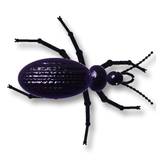
CarabeVit dans un terrier sous une souche et chasse les fourmis isolées (il laisse tranquilles les groupes de trois ou plus). Plus rapide qu'une fourmi ordinaire — on ne peut lui échapper qu'après le second Saut génétique. Carapace solide : les guerrières le blessent plus lentement. Blessé, il se cache dans son terrier et guérit ; sans petits, il peut fuir vers une souche vide et creuser un nouveau terrier. Il ne poursuit pas une proie de l'autre côté du ruisseau.
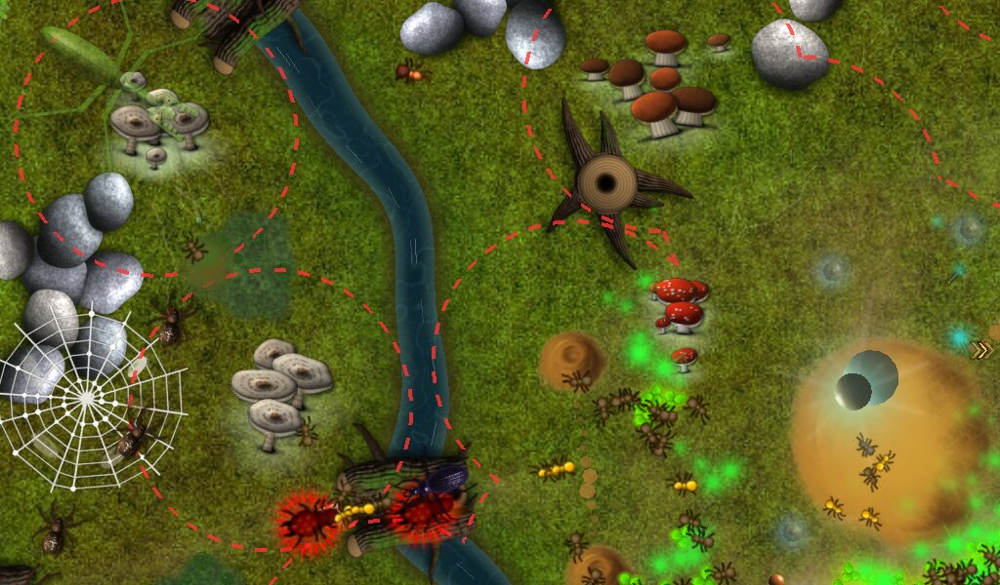
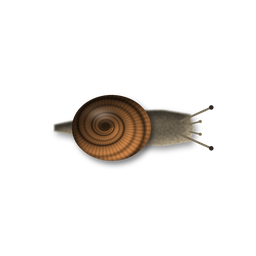
EscargotSort de temps en temps d'un étang ou du ruisseau et rampe lentement sur le terrain (en contournant pierres et collines, en laissant une traînée brillante) — surtout près de l'eau, mais parfois il s'en va « fatigué » au loin. Plus il rampe, plus il grandit : 6 stades ; il sort de l'eau à l'un des trois premiers. S'il rampe sur de la nourriture, il la mange — jusqu'à 10 morceaux, puis se repose. Un escargot est rongé par les ouvrières et les bâtisseuses (envoyez-les comme vers un champignon) ; les guerrières ne le blessent pas. Plus l'escargot est grand, plus il rapporte de nourriture — la quantité est dans l'infobulle ; la nourriture va au camp dont les fourmis sont les plus nombreuses près de lui. Dans les réglages du monde : Escargots — Peu / Normal / Beaucoup (seulement avec étangs ou ruisseau).
Mante religieuse — le boss
Leur nombre dépend des réglages du monde : Peu — une, Normal — deux (une sur une petite carte), Beaucoup — deux à quatre. Elle guette dans la bande neutre, presque invisible dans l'herbe. Elle frappe en un éclair toute fourmi à portée de ses pattes ravisseuses : une ouvrière meurt, une guerrière perd 8 de santé. Elle se défend contre tous à la fois — il faut une foule de guerrières. Le camp qui a le plus de guerrières près du corps au moment de sa mort reçoit 60 de nourriture. Un piège lui retire 60 de santé. Une mante tuée ne réapparaît pas.
Gerris
Glisse sur l'étang et fait tomber la nourriture ou le bois d'une fourmi qui marche au ras de la rive — la charge coule. Il ne nage jamais là où une guerrière est proche (moins de ~70), si bien qu'une zone de patrouille près de l'étang protège la rive. Un gerris tué est remplacé par un nouveau avec le temps.
Fourmis rousses
Une colonie neutre : un nid au centre (Peu), deux en miroir (Normal) ou deux sur chaque moitié (Beaucoup). Les rousses ramassent des miettes autour de chez elles et ne touchent personne tant qu'on ne les touche pas.
- Les guerrières qui s'approchent du nid sont seulement chassées — sans guerre.
- Le camp dont les guerrières ont attaqué une fourmi rousse ou un nid reçoit une vendetta : ses fourmis près du nid sont attaquées, et de temps en temps un détachement de rousses part en raid contre ses ouvrières.
- Un nid détruit donne toute sa réserve de nourriture au camp qui a le plus de guerrières à proximité. La réserve figure dans l'infobulle.
- Près des nids de fourmis rousses ne poussent ni nourriture ni champignons ; les patrouilles les contournent.
Nouvelles colonies
Quand un nid a amassé 200 de nourriture, il en cède 75 et la moitié de ses fourmis à une nouvelle colonie : le détachement part vers un emplacement libre sur la même rive (comme lors de la création de la carte — pas près de l'eau, des pierres, des champignons, de la nourriture, des entrepôts, des pièges, d'autres nids de rousses ni de vos colonies ; si l'emplacement se gâte en route, un autre est choisi). Si plus de la moitié du détachement est tuée en route, les survivantes rentrent. Sur place, les fourmis apportent des brindilles et le nid grandit en 8 stades (dans l'infobulle « En construction : N % ») ; le chantier peut être détruit. Achevé, c'est un nid de fourmis rousses ordinaire avec sa propre réserve. Au total, il y a au plus 3 / 4 / 5 / 7 nids de rousses sur la carte — de la petite à l'immense, mais toujours au moins deux de plus qu'au début.
L'ennemi
L'adversaire informatique joue selon les mêmes règles : il fait éclore des fourmis, construit un laboratoire et une chaîne d'entrepôts, pose des zones (pointillés rouges), fait de la recherche, pose des pièges, attaque et franchit le ruisseau par les passages.
- Chasse les animaux gênants s'il a assez de guerrières.
- Protège ses ouvrières en mode agressif.
- Son comportement dépend de la difficulté choisie.
Résultats et graphiques
Après une victoire ou une défaite s'ouvre l'écran des résultats : temps de jeu, difficulté et taille de la carte, boutons Rejouer et Menu. Après la mélodie de victoire ou de défaite revient la musique du menu principal.
- Résumé — ressources obtenues, fourmis détruites et perdues par type, technologies recherchées, pièges (posés / détruits / par l'ennemi), animaux tués par les colonies.
- Graphiques — nombre de fourmis et ressources des deux camps au fil du temps. Des épées marquent les attaques : le chiffre près de l'icône indique combien de fourmis différentes y ont pris part (les attaques ordonnées par clic sur un ennemi comptent aussi).
Statistiques et classements
- Statistiques (menu principal) — compteurs sur toutes les parties : parties jouées (une partie compte après 2 minutes de jeu ou si elle se termine avant), victoires et défaites par difficulté, temps de jeu, ressources récoltées, fourmis détruites et perdues, entrepôts et pièges, animaux vaincus. Les compteurs sont gardés à côté du jeu et dans Steam.
- Classements — la victoire la plus rapide pour chaque difficulté, taille de carte et mode (normal / riche) : le top mondial et vos amis Steam. Après une victoire, l'écran des résultats affiche votre rang. Les résultats en mode Explorateur ne sont pas enregistrés.
Options
- Son et Musique — activés/désactivés et volume par barres (pas de 10 %).
- Défilement — vitesse de défilement du terrain au bord de l'écran et aux flèches : 50 % — normal, 100 % — deux fois plus vite, 0 % — pas de défilement au bord (seulement en faisant glisser).
- Plein écran — Oui (par défaut) : le jeu remplit l'écran ; Non : en fenêtre. Se bascule aussi avec Alt+Entrée.
- Résolution — pour le plein écran, une liste déroulante jusqu'à la 4K (par défaut — celle du bureau).
- Fond de menu animé — Oui : une vidéo tourne dans le menu principal ; Non (par défaut) : la première image fixe s'affiche.
- Langue — 9 langues : russe, anglais, ukrainien, allemand, français, espagnol, portugais, polonais, turc.
- Raccourcis — chaque touche peut être réassignée ; « Par défaut » rétablit les habituelles.
La musique s'adapte à la situation : menu, jeu paisible, combat, victoire, défaite.
Raccourcis
Touches par défaut (modifiables dans les options) :
| Touche | Action | Touche | Action |
|---|---|---|---|
| E | Ouvrière | T | Panneau Technologie |
| A | Bâtisseuse | F | Sylviculture |
| W | Guerrière | G | Champignonnière |
| Maj+E/A/W | 16 fourmis d'un coup | = / - | Ajouter / retirer une zone |
| L | Laboratoire | Tab | Sélectionner toutes les guerrières |
| S | Entrepôt | Home | Vers ma colonie |
| B | Piège | Échap | Menu principal |
| Alt+Entrée | Plein écran / fenêtre |
Souris : bouton gauche — sélection, cadre, ordre ; droit — un clic annule la sélection et ferme les panneaux, maintenu il fait glisser le terrain ; molette — zoom ; bouton du milieu — fait aussi glisser le terrain.
Conseils
- Commencez par quelques ouvrières, puis après 30 secondes quelques bâtisseuses : 35 de bois pour le laboratoire et 25 pour l'entrepôt sont l'étape clé du début.
- Placez des entrepôts sur les endroits riches loin de la fourmilière — la livraison devient courte, et les pistes accélèrent les fourmis.
- Activez Attaquer tous et gardez quelques guerrières près des zones de récolte — elles protègent les ouvrières des araignées, carabes et gerris.
- N'envoyez pas les ouvrières à travers les marais : elles y sont lentes et vieillissent vite.
- Ne touchez pas aux rousses sans nécessité — une vendetta entraîne des raids sur vos ouvrières. Mais un nid détruit donne toute sa réserve de nourriture.
- Attaquez la mante avec une grande foule ou attirez-la sur des pièges — 60 de nourriture, ça vaut le coup.
- Mettez des guerrières en poste près d'une zone de récolte (second clic sur le même point) — elles ne se dispersent pas et protègent les ouvrières.
- Envoyez des ouvrières sur un gros escargot qui rampe sur votre nourriture — il rapporte jusqu'à 70 de nourriture.
- Agrandir entrepôt agit en pourcentage des réserves — c'est plus rentable quand vous avez beaucoup de ressources.